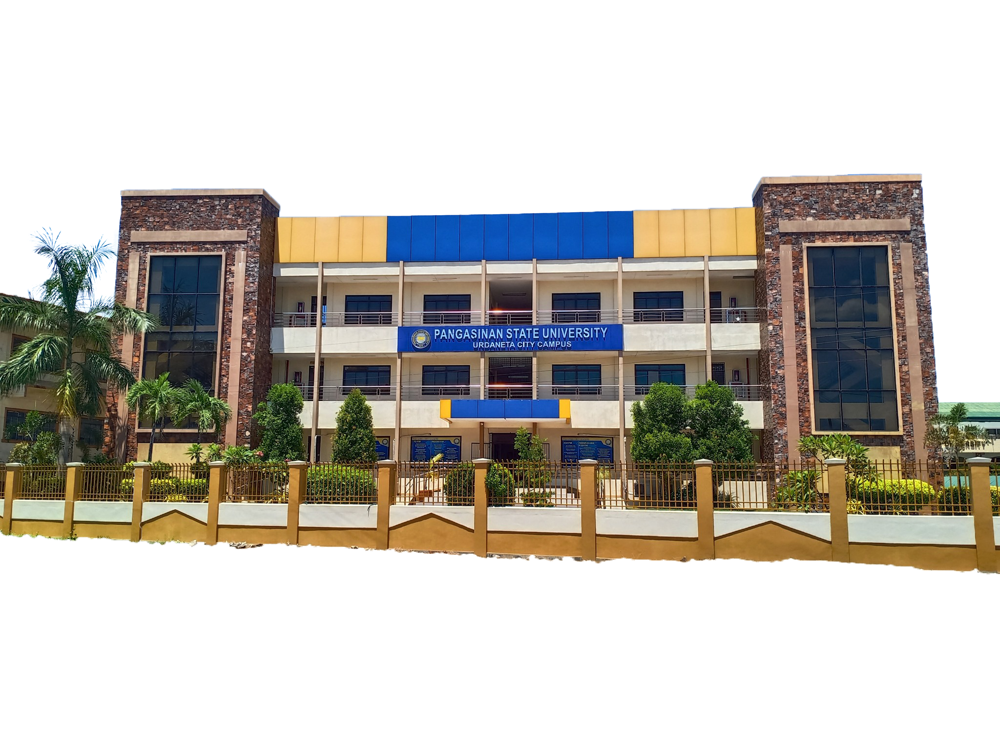
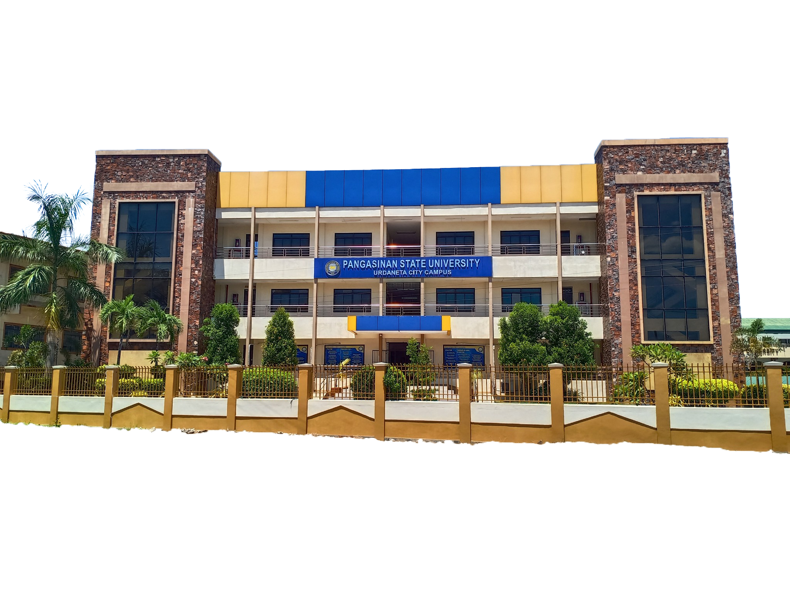

.png) 

STRENGTHS
1. The institution has a mechanism for the purpose of translating the VMGO into various local dialects.
2. The 5-year Strategic Plan of the University is impressive and approved by the BOR with Resolution No. 111, series 2015.
3. There is study conducted about the level of acceptability and awareness of VMGO from the different stakeholders.
RECOMMENDATIONS
1. The administration may consider conducting a more comprehensive tracer study that will provide significant data about the current profile of the graduates in the program.
2. Feedback from the graduates regarding the quality/relevance of the curriculum to their present job may be included in the tracer study.
3. The Campus may consider to have a well-documented formulation, review and revision of the VMGO.
COMPLIANCE
A full-blown tracer study was conducted to determine the requirement. A university wide tracer study is being spearheaded by the Center for Statistics and Computing Sciences (CSCS). Aside from the 3-year University-wide tracer study of the CSCS, the IT department conducts graduate tracing every year as input to the Planning Office.
Aside from the graduate tracing activities being conducted, the IT department conducts relevant research focused on gap analysis with the BSIT graduate job skills and the industry needs. These aims to better equip the BSIT graduates with the necessary skill sets needed for their jobs.